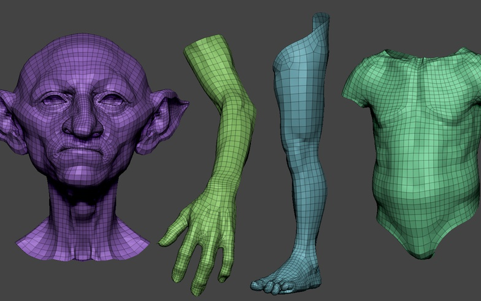
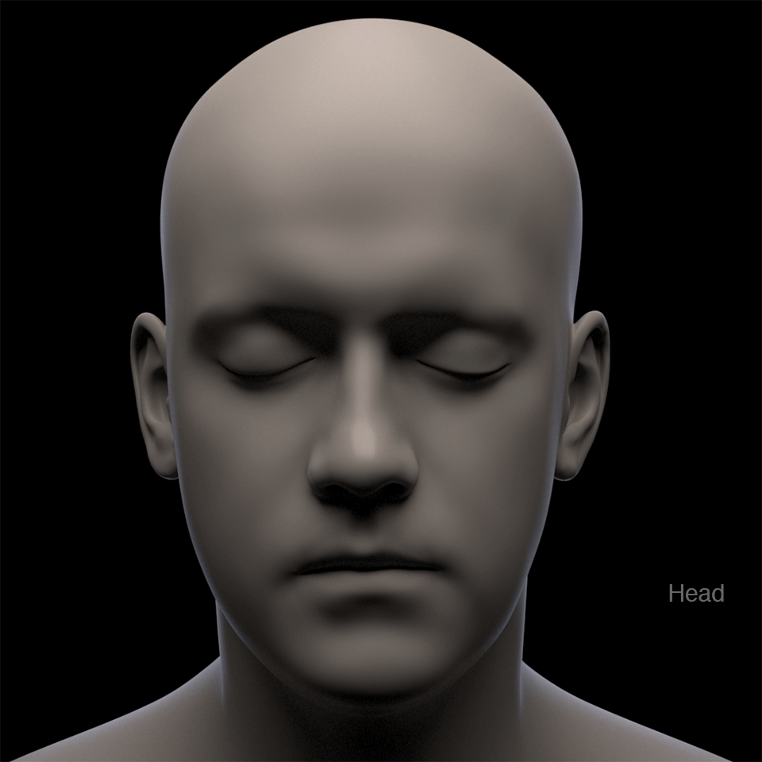
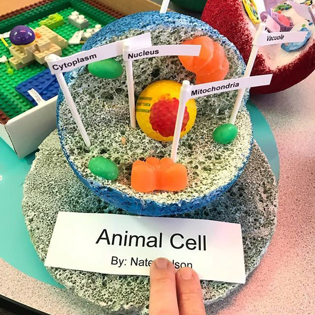

Hello, I’m
Maya Barve.
A senior-year design student who trying
to specialize in 3D modeling & texturing.

01 / PROJECT NAME
Goblin concept digital sculpture with
human-like skin. Learned a lot of quick tips
and look development.
human-like skin. Learned a lot of quick tips
and look development.
Sculpted in ZBrush, Retopologized and UVs done in Maya, Textured in Mari, Rendered using Arnold.


02 / PROJECT NAME
Subsurface weight, specular roughness,
diffuse maps generated with the procedure
and manual techniques.
diffuse maps generated with the procedure
and manual techniques.
Sculpted in ZBrush, Retopologized and
UVs done in Maya, Textured in Mari,
Rendered using Arnold.

UVs done in Maya, Textured in Mari,
Rendered using Arnold.
03 / PROJECT NAME
Experimental creature modeling for school
project.
project.
Sculpted in ZBrush, Retopologized and
UVs done in Maya, Textured in Mari,
Rendered using Arnold.

UVs done in Maya, Textured in Mari,
Rendered using Arnold.